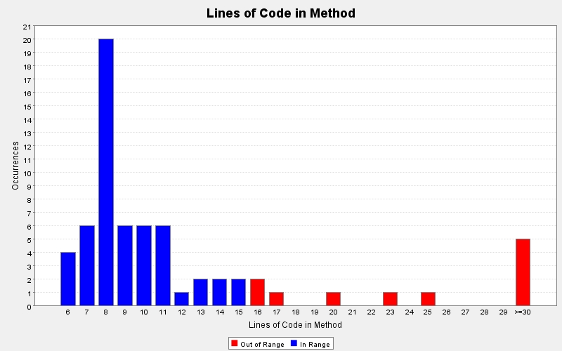

Produced by State Of Flow Eclipse Metrics on Sun Feb 17 18:58:31 EST 2013
|  |
|
| CC (max) |
FE (max) |
LOCm (max) |
NLS (max) |
NOL (max) |
NOP (max) |
NOS (max) |
Ce | LCOM-CK | LCOM-HS % | LCOM-PFI % | LCOM-TC % | NOF | WMC | Line | Type | Package |
|---|---|---|---|---|---|---|---|---|---|---|---|---|---|---|---|---|
| 2 | 0 | 58 | 0 | 2 | 1 | 32 | 13 | 0 | 83 | 60 | 321 | 5 | 6 | 20 | TwitterResultsPanel | gui |
| 1 | 0 | 46 | 0 | 1 | 1 | 31 | 9 | 0 | 0 | 0 | 0 | 7 | 5 | 21 | AuthenticatePanel | gui |
| 2 | 0 | 43 | 0 | 2 | 1 | 29 | 17 | 0 | 91 | 52 | 1179 | 10 | 13 | 25 | TwitterGUI | gui |
| 4 | 11 | 31 | - | 3 | 1 | 29 | 3 | - | - | - | - | 0 | 4 | 88 | AuthenticatePanel$(anonymous) | gui |
| 6 | 2 | 25 | - | 2 | 1 | 20 | 3 | - | - | - | - | 0 | 6 | 168 | TwitterGUI$(anonymous) | gui |
| 6 | 4 | 23 | 1 | 2 | 5 | 27 | 16 | 11 | 93 | 53 | 365 | 13 | 32 | 22 | TwitModel | model |
| 1 | 0 | 20 | 0 | 1 | 6 | 6 | 6 | 21 | 100 | 100 | 133 | 7 | 8 | 12 | Tweet | model |
| 1 | 0 | 17 | 0 | 1 | 6 | 3 | 7 | 0 | 50 | 95 | 0 | 2 | 19 | 17 | TwitterEngine | engine |
| - | - | - | - | - | 0 | - | - | - | - | - | - | - | - | 8 | ITweet | engine |
| 1 | - | - | 0 | 1 | 0 | 0 | 3 | - | - | - | - | 0 | 1 | 238 | TwitterGUI$(anonymous) | gui |
| 1 | 1 | - | 0 | 1 | 1 | 1 | 2 | - | - | - | - | 0 | 1 | 51 | TwitterResultsPanel$(anonymous) | gui |
| - | - | - | - | - | 0 | - | - | - | - | - | - | - | - | 12 | MyTweet | model |
Produced by State Of Flow Eclipse Metrics on Sun Feb 17 18:58:31 EST 2013